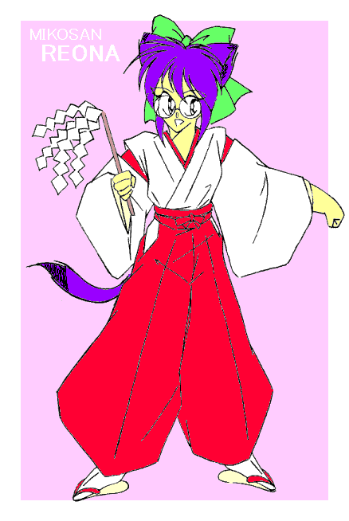
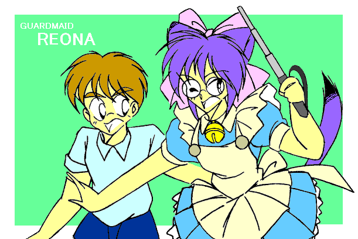
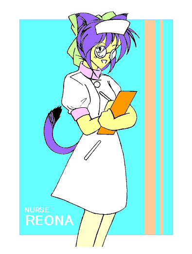
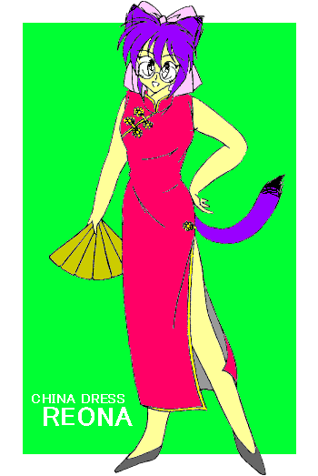
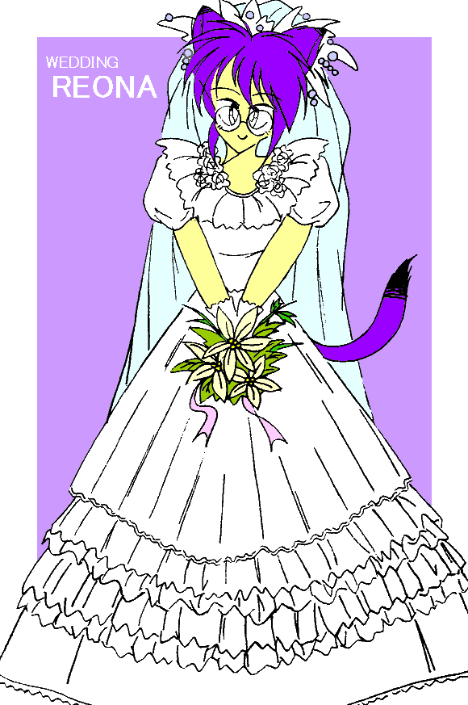

[
メインページ
] [
掲示板
] [
感想掲示板
]
REONA 五変化
絵師： MONDO
さん
（イラストに合うストーリーを
募集中
です!!）

◆ −絵師コメント− ◆
ゴールドアームさんの作品にインスパイアされて描きました。
袴と払い串に力（りき）入ってます。

◆ −絵師コメント− ◆
こちらは北房さん、角さんの作品をモチーフにしました。

◆ −絵師コメント− ◆
「２０６号室の八重洲さ〜ん、お熱さがりましたか〜っ（笑）」

◆ −絵師コメント− ◆
「えへへ、脚にはちょっと自信があるんですっ」

◆ −絵師コメント− ◆
「長い間ありがとうございました。レオナはお嫁にいきます。
…………………なあんちゃって（笑）」
[
メインページ
] [
掲示板
] [
感想掲示板
]
【GALLERY管理人より】
作品を見て（読んで）良かったと思ったときは、ぜひとも何かメッセージを残していって下さい。
一言の簡単なメッセージでも結構です。
・「面白かった」「もっと続きが読みたい」といった感想
・「○○の出番を増やしてほしい」などお気に入りのキャラに対するコメント
・「△△さん、頑張って下さい」など、作者さんへの励ましの言葉
…などなど、御自由にお書き下さい。
ただし、誹謗中傷のようなコメントは御遠慮下さい。
●既に書かれている感想を見る
コメント：
お名前：
※匿名・仮名でも構いません。
※書き込み後は、ブラウザの「戻る」ボタンで戻って下さい。